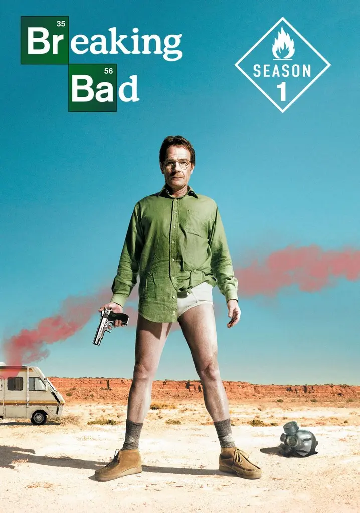
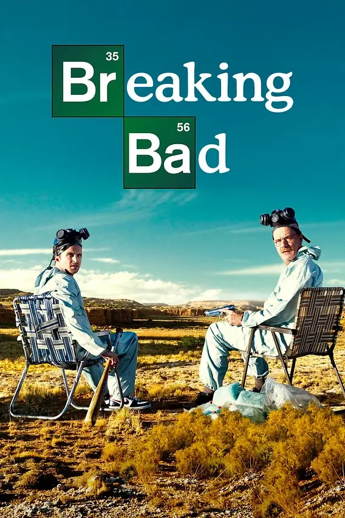
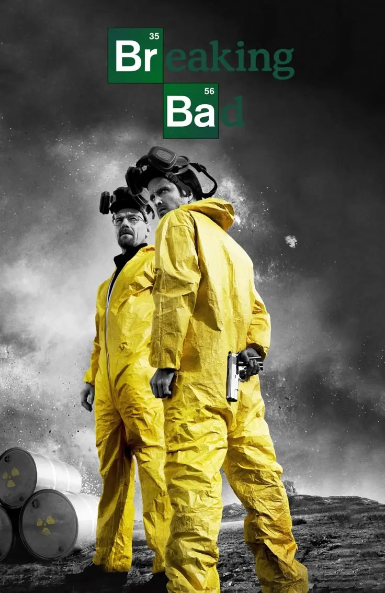
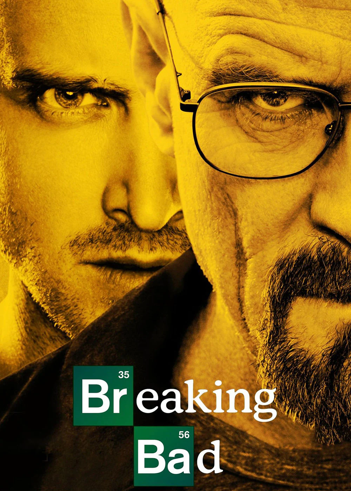
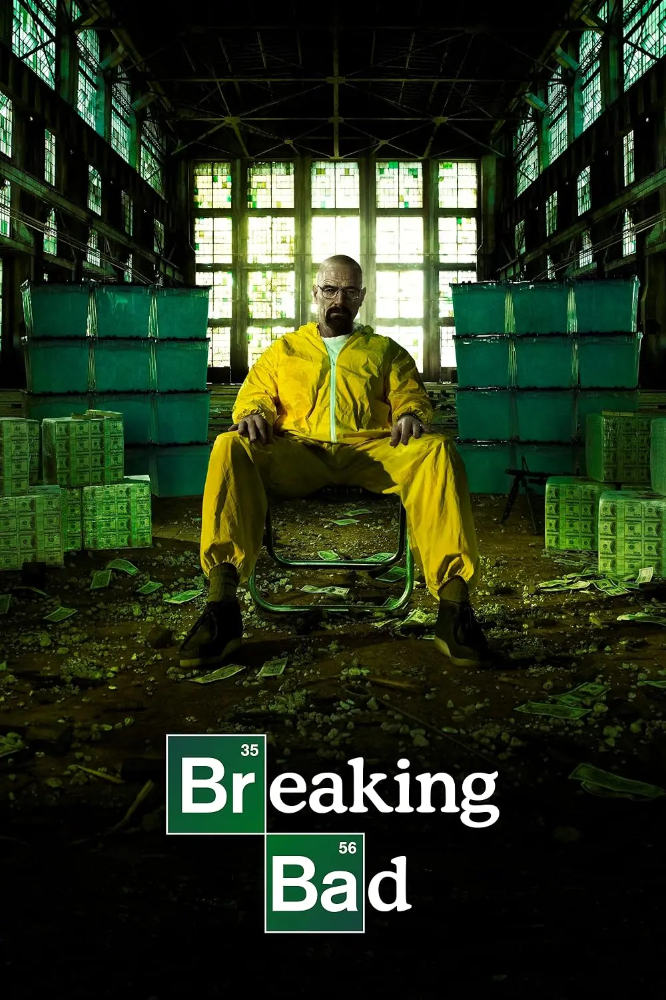

Каталог улюблених
фільмів
Тут ти можеш подивитися мій власний список фільмів і подивитися їх.
-

Во всі тяжкі Сезон 1
2008 р.
Детальніше✕Breaking Bad season 1
Перший сезон «Пуститися берега» (Breaking Bad) знайомить нас із Волтером Вайтом, пригніченим вчителем хімії, який після діагнозу «рак легень» вирішує варити метамфетамін, щоб фінансово забезпечити вагітну дружину та сина з ДЦП. Разом із колишнім учнем-розгільдяєм Джессі Пінкманом він занурюється у небезпечний світ наркоторгівлі, де його науковий геній стикається з жорстокою реальністю криміналу. Атмосфера серіалу майстерно балансує між похмурим психологічним трилером та чорним гумором, поступово перетворюючи звичайну людину на розрахункового гравця підпільного ринку.
Кримінальна драма, Трилер, Неовестерн, Чорна комедія
У головних ролях
Браян Кренстон, Аарон Пол
-

Во всі тяжкі Сезон 2
2009 р.
Детальніше✕Breaking Bad season 2
Во другому сезоні Волтер Вайт та Джессі Пінкман намагаються розширити свій наркобізнес, але швидко стикаються з кривавими наслідками виходу на великий ринок та жорстокістю мексиканських картелів. Атмосфера стає значно напруженішою та похмурішою, просочуючись передчуттям неминучої катастрофи, що майстерно підкреслюється загадковими флешфорвардами на початку серій. Поки Волт все більше заплутується у власній брехні перед родиною, Джессі шукає розради в нових стосунках, що робить цей сезон глибоким дослідженням того, як жадібність та амбіції руйнують людські душі.
Кримінальна драма, Трилер, Неовестерн, Чорна комедія
У головних ролях
Браян Кренстон, Аарон Пол
-

Во всі тяжкі Сезон 3
2010 р.
ДетальнішеBreaking Bad season 3
У третьому сезоні Волтер Вайт остаточно приймає свою темну сторону, починаючи роботу на розважливого наркобарона Гуса Фрінга у надсучасній лабораторії, тоді як Джессі намагається знайти своє місце після особистої трагедії. Атмосфера стає максимально напруженою та «стерильною», де кожен крок героїв контролюється, а загроза з боку мовчазних та нещадних мексиканських кілерів-близнюків створює відчуття постійної небезпеки. Сюжет зосереджується на професіоналізації кримінального життя Волта та його конфлікті з Хенком, який підходить занадто близько до розгадки особи таємничого Хайзенберга.
Кримінальна драма, Трилер, Неовестерн, Чорна комедія
У головних ролях
Браян Кренстон, Аарон Пол
-

Во всі тяжкі Сезон 4
2011 р.
Детальніше✕Breaking Bad season 4
У четвертому сезоні протистояння між Волтером Вайтом та розважливим Гусом Фрінгом перетворюється на смертельну гру в «кішки-мишки», де на кону стоять життя близьких і влада над наркоімперією. Атмосфера стає гранично параноїдальною та холодною, демонструючи трансформацію Волта з вимушеного злочинця на маніпулятивного стратега, готового на все заради виживання. Поки Джессі намагається впоратися з моральним вантажем своїх вчинків, Скайлер дедалі глибше втягується у відмивання грошей, що створює нестерпну напругу всередині родини на тлі неминучої розв'язки.
Кримінальна драма, Трилер, Неовестерн, Чорна комедія
У головних ролях
Браян Кренстон, Аарон Пол
-

Во всі тяжкі Сезон 5
2012 р.
Детальніше✕Breaking Bad season 5
У фінальному сезоні Волтер Вайт, позбувшись усіх конкурентів, намагається побудувати власну наркоімперію, але його невгамовне его та жага влади ставлять під удар усе, що він колись прагнув захистити. Атмосфера стає максимально похмурою та епічною, просоченою відчуттям неминучої розплати, коли таємниці Хайзенберга нарешті виходять назовні та руйнують життя його близьких. Поки Джессі намагається вирватися з кола насильства, а Гінк наближається до істини, глядач спостерігає за трагічним і масштабним крахом людини, яка втратила свою душу в гонитві за величчю.
Кримінальна драма, Трилер, Неовестерн, Чорна комедія
У головних ролях
Браян Кренстон, Аарон Пол